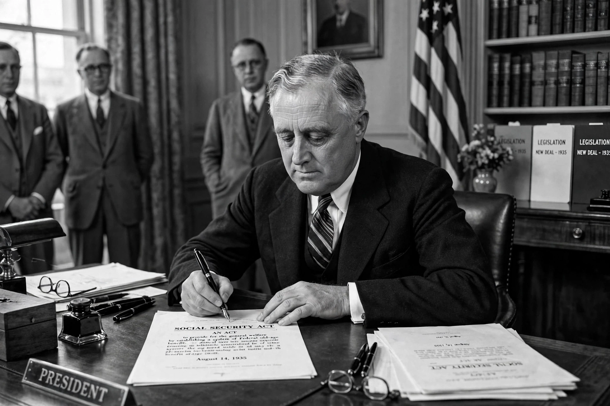

From Wikipedia, the free encyclopedia
| Social Security Act of 1935 | |
|---|---|
 | |
| Enacted | 14 August 1935 |
| Signed by | President Franklin D. Roosevelt |
| Created | Social Security Board (later SSA); old-age pensions; unemployment insurance |
| Citation | Pub. L. 74-271, 49 Stat. 620 |
The Social Security Act of 1935 is a law enacted by the 74th United States Congress and signed into law by President Franklin D. Roosevelt. The law created the Social Security programme as well as insurance against unemployment. It was part of Roosevelt's domestic New Deal programme, responding to the mass poverty among the elderly exposed by the Great Depression.
The Act established a federal old-age pension system financed by payroll taxes on employers and employees, to begin paying monthly benefits in 1940; a federal-state unemployment insurance system; and grants to the states for aid to dependent children, maternal and child health, and aid to the blind. Administration was assigned to a new Social Security Board. The first Social Security numbers were issued in late 1936, and the first monthly retirement cheque — for $22.54 — went to Ida May Fuller of Vermont in January 1940.
Amendments in 1939 added survivors' and dependents' benefits; the 1950s added disability insurance; and in 1965 the Act was amended to create Medicare and Medicaid. Its constitutionality was upheld by the Supreme Court in Helvering v. Davis (1937). Social Security remains the largest federal programme in the United States and the main source of income for most retirees.
See also: New Deal · Medicare · Franklin D. Roosevelt